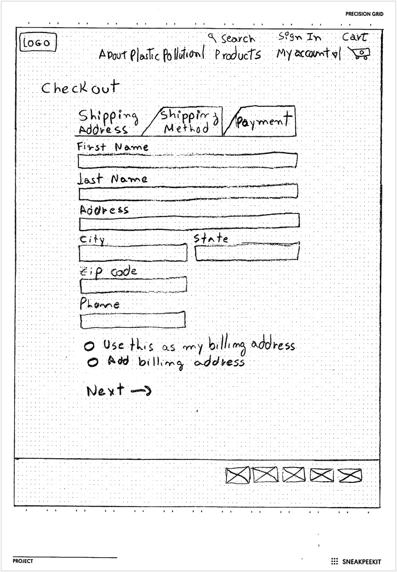

Problem
Although it seems that people today are more aware of plastic pollution, many people still don't know about the level of pollution in the oceans, where this waste comes from, and how it affects our lives and our environment. The low cost and practicality of plastic materials, along with the idea that recycling works make most people not see the big problem that is plastic.
Solution
Provide sustainable, natural products for the benefit of our planet, offering choices that reduce society's impact on the environment now and for future generations. There is no doubt that plastic should be replaced as much as possible. OceanLeaf uses curated information about plastic pollution to aware users about the problem and offers 100% biodegradable and clean products to motivate people to change their daily habits and help the planet.
Design roles
- UX Design
- Visual Design
- Brand & Identity
Design deliverables
- User Surveys
- Personas
- Competitive Analysis
- Concept & Identity
- User Stories & Flows
- Paper Prototype
- Wireframes
- User Testing
- Visual Design
Tools & Software
- Sketch
- Figma
- Invision
- Photoshop
- Usability Hub
- Maze
- Draw.io
01
Research & Discovery
User Survey
61 people between 18 and 50 years answered the survey.
View survey here.
said that the reason to use plastic items is because they don’t know what to use to replace plastic.
said that the reason they don’t have a recycling system is because city doesn’t offer this service.
use plastic silverware, plastic cups, straws, Ziploc bags, plastic water bottles, plastic bags, every day.
would like to see on a new website alternative products to replace plastic products.
said that they don’t read or follow any of the websites online about ocean plastic pollution.
Competitive analysis
As I went through my competitive analysis, I noticed that dependence on donations, lack of information on products to replace everyday plastic, and limited website design were common weaknesses shared by competitors. I sought to turn this weakness into Ocean Leafs’s strength by making e-commerce of sustainable and eco-friendly products along with real information on plastic pollution in the oceans a high priority.
View competitive analysis here.
User Personas
Based on the survey results I created two personas and analyzed their goals, frustrations, and needs, then I could understand the target audience.
View more user stories and user flows here.
Diana M
39 | Business owner
Westerville, OH
“It is hard to find a convenient and inexpensive product like plastic to use everyday.”
Frustation
- I don't know where to find non-plastic items that is cheap and convenient as plastic
- I don’t know the impact that the plastic used by my family can cause
- Plastic is everywhere and in most of the products we buy, in supermarkets and restaurants
Goals
- Find products that are convenient like plastic with low cost
- Learn about plastic impact
- Understand why the recycle system is not enough to keep plastic out of the ocean
Mark D
42 | Architect
Columbus, OH
“Plastic utensils need to be banned if they can’t be recycled.”
Frustation
- High cost of non-plastic items
- Lack of information on how to easily reduce the use of plastic
- Hard to find to buy eco-friendly products
Goals
- Find ways to replace plastic items
- Decrease daily use of plastic
- Learn about products eco-friendly
John K
25 | Student
Phoenix, AZ
“I don’t think the problem really is from the individual use of plastic.”
Frustation
- I don’t think that individual daily use of plastic is the problem, I think the problem is the pollution of developed countries and industries
- Plastic is easily accessible in the store, for example, markets don't sell water glass
Goals
- Find out which industries and which countries pollute the most and compare with people daily pollution
- Find a store or supermarket where non-plastic products are easily available
02
Information Architecture
User Stories and Flows
To begin mapping the MVP based on user goals, I created a list of the highest to low priority user stories and then I converted the highest priority user stories in user flows to describe and visualize how the potential user would move through the website.
View more user stories and user flows here.
Returning user - Track Order
Low fidelity mockups
After having created my sitemap, user stories, and user flows, I could move onto building the structure of the site through wireframes — starting from simple wireframe sketches to digital low fidelity wireframes.
View sketches here.
User testing
To make sure that I was on the right track, I decided to test my sketches. The first round of testing was conducted in-person with 3 users that were asked to complete the set of tasks bellow.
View usability test here.

- Sign up - as a new user
- Checkout - as a new user
- Track order - as a returning user
- Return item - as a returning user
- Delete item from cart - all users
After receiving feedback from the users that I presented my project I had the opportunity to make changes and improve my design.
View all sketches before and after user test here.
Before
After
The Review Order and Place Order button were positioned on the right side of the checkout process window. After doing the user test, I found out that users were getting confused with that information on the right side of the window and clicking on place order button before filling out the checkout information.
To fix this issue I removed Review Order and Place Order button from the checkout page, and then I created a new page for that information.
Wireframes and user testing
With all the modifications done on my sketches I then started the low fidelity wireframes, and at this time I performed remote usability tests using Waze application. On this test, I was able to detect that users were having trouble finding the button to start the signup process.
To fix this problem, I changed the design and created a signup button beside of sign in button on top menu bar.
View wireframes here.
Before

After

03
Brand Identity
Brand & Logo
The brand was developed with the mission to convey the idea of a simple and environmentally friendly product created to raise awareness that anyone can positively impact our fragile planet, even with simple choices of which products they choose to consume.
View style guide here.
Typography
Domine and Lato were selected as the primary typefaces because Lato has a feeling of warmth, while the strong structure provides stability and seriousness, and Domine is friendly in appearance and a perfect choice for where the text is the main focus.
Colors

Logo
After selecting Ocean Leaf as the brand name, I began the logo creation process with a brainstorm and sketching out a few options for the logo. After sketching and refining some of the best logos options, logo number 6 with wavy leaves was chosen.

04
Visual Design & Testing
High fidelity mockups and user testing
After creating the high-fidelity mockups, my project was submitted in several feedback processes for design refinement, preference test, and one more usability test. Another in-person usability test was performed again with three people. Insights revealed that some of the users were confused by two of the requested tasks.
During the signup, the user wanted to complete the process using a social media account. On the homepage, he clicked to create an account, and on the next page, he clicked on the wrong social media button and said that he got confused with so many social media button together.
Before
After
To fix this issue, I designed separated pages for the process of sign in and signup.
The second user completed the tasks as expected, the only difficulty that the user had, was on how to return to the homepage or to the previous page when navigating inside the product's page.
To fix this issue, I include Breadcrumbs to my design to make users aware of their current location and have easy navigation through the website and products page.
Before
After
A / B Preference test
I conducted a preference test on usability hub to see whether one design favored the other. In this test, I wanted to find out which design would be better to use. After getting the results, 71% of the testers choose C. The main reason was that it looks cleaner, simple and keeps the focus on the product rather than the navigation.
See more preference test here.
A . 4%
B . 25%
C . 71%
On this test, I wanted to find out what would be the best image to use, with texture or without. The results showed that 75% of the testers choose B.
A . 25%
B . 75%
Submitting my project to the Design critique team, mentors and users I was able to find strengths and weaknesses on my design, and then I had the opportunity to make changes and refine my mockups.
Before
After
- 1. The menu bar was changed from two lines to one, containing only the information necessary for the user.
- 2. CTA button to create an account has been removed from the menu bar and placed on the left side of the hero section to be easily accessed by the user.
- 3. New rows were created to include more information about the product and create a connection between the homepage and the products.
- 4. The images have been changed to better match with the design and products.
- 5. The icons have been changed position and color for better viewing on the page.
- 6. All CTA buttons follow the same color pattern for better design consistency.
- 7. The bubbles on the background don't overflow over the edges anymore, consequently creating more white space in the design.
- 8. Also was included users testimonials.
Before
After
- 1. Top image and Design have been modified to follow the homepage pattern.
- 2. The borders in the filter section have been removed to follow the same pattern as the bar menu.
- 3. The grid of the cards on the product page has been changed from a four-column grid to a two-column grid to connect it to the grid on the homepage.
05
Conclusion


What I learned
Ocean Leaf accomplishes its goals, giving users a simple and easy e-commerce experience while being informative. Through many testing sessions and design iterations, I developed a user interface that is simple to use and easy to navigate. User testing provided crucial feedback for my process.
Being able to watch users actually use the website, provided valuable insight that I immediately put into action. Also important, I was validated by the positive responses to Ocean Leaf. Comments during testing like “simple to use” and “easy to follow” confirmed that the experience was a positive one for users.